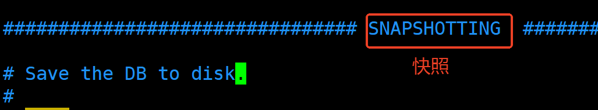
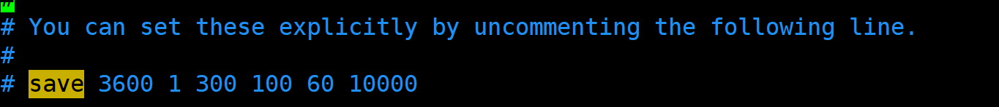
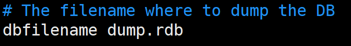
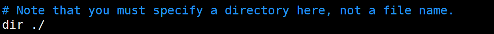
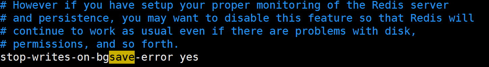
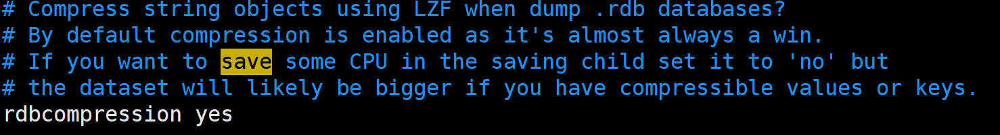
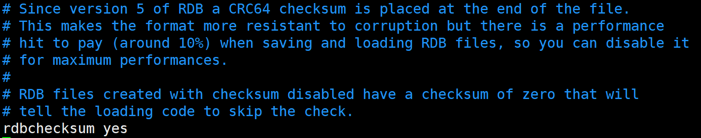
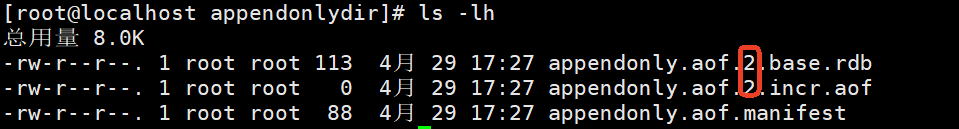

Redis提供了两种持久化：
在指定的时间间隔内将内存中的数据集快照写入磁盘。恢复数据时会将当时的快照文件直接导入到内存中。
数据集快照：当前时间点下的Redis缓存中的数据。(保存时新改变的内容会被忽略)
RDB以二进制的格式存储数据。
redis-server在同级目录下。（可配置）D:\project\PKM>docker exec -it iia-redis /bin/sh
/data # ls
dump.rdb
redis-cli SAVE 命令或 redis-cli BGSAVE 命令。redis-cli SAVE 会阻塞服务器直到 RDB 文件创建完毕redis-cli BGSAVE 会创建一个子进程（不是线程）来处理 RDB 文件的创建，不会阻塞服务器。redis.conf文件中进行如下配置，方可开启自动触发。例如，可以配置在满足一定条件下（如多少秒内有多少次写操作，两个条件）自动执行 BGSAVE。save 3600 1 # 在1小时内至少有1次写操作，则执行BGSAVE
save 300 100 # 在5分钟内至少有100次写操作，则执行BGSAVE
save 60 10000 # 在1分钟内至少有10000次写操作，则执行BGSAVE
# 以上的配置是Redis7的默认配置。
redis-cli CONFIG GET save
save 30 3）写操作开始计时，并记录写的次数为1。计时器 >= 30秒 并且 写的次数 >= 3条件成立时，则触发RDB快照。BGSAVE命令，计时器就立即进入下一个计时周期。（注意：不会等 BGSAVE 执行结束后才进入下一个计时周期）BGSAVE保存。（小细节：如果上一次的 BGSAVE 执行比较耗时，超过了下一个计时周期，那么新的执行周期对应的 BGSAVE 会延迟执行）当执行BGSAVE命令时，redis会单独fork一个子进程（fork可以理解为复刻/复制一个和主进程完全一样的进程，这表示主进程不进行任何IO操作，确保redis极高性能），该进程会将当下redis内存中的数据写入到一个临时文件中，当内存中的数据全部同步到临时文件后，临时文件再替换上一次的dump.rdb。
问题：为什么要用临时文件？而不是直接写入dump.rdb文件？
| 方式 | 直接写入dump.rdb | 临时文件 + 原子替换 |
|---|---|---|
| 崩溃一致性 | 可能生成部分损坏的 RDB 文件 | 旧文件始终完整，新文件全量校验 |
| 并发安全 | 其他进程可能读取到不完整文件 | 替换是原子操作，无中间状态 |
| 实现复杂度 | 需额外逻辑处理中断恢复 | 简单可靠 |
另外大家再思考一个问题：上述描述中提到子进程会将内存中的数据写入到一个临时文件中，那如果在写到临时文件的过程中主进程又进行了写操作，内存中的数据又变化了，子进程会把变化后的数据写入到临时文件中吗？不会的。永远要记住，RDB备份的是内存快照，备份的是某一个时刻的内存数据。快照是如何实现的呢？底层使用了写时复制技术（著名的COW技术：Copy On Write）。
写时复制技术原理
COW 的一个形象的比喻：
📚 实体书 = 物理内存
📇 借书卡A = 主进程的页表
📇 借书卡B = 子进程的页表（fork产生）
👤 我 = Redis主进程（处理写请求）
👥 哥们 = Redis子进程（负责备份）
✅ 动作：
1. 我要改书（主进程SET）
2. 不能直接改实体书（因为哥们看着）
3. 复印我改的那一页（COW复制内存页）
4. 我改复印页（主进程写入新副本）
5. 哥们继续看原页（子进程保持原数据）
redis服务在启动之后，自动去找redis.conf配置文件中配置的dump.rdb文件，自动恢复数据到内存中。
在redis.conf中搜索SNAPSHOTTING：

设置RDB备份规则：

以上英文翻译为：你可以通过取消以下行的注释来显式设置这些参数
设置文件名：

设置存储目录：

设置备份失败是否停止写入：默认是yes，表示RDB备份失败后，redis的set、hset、lpush等写操作将无法使用。但读取命令仍然可用。

设置是否压缩rdb文件：默认yes

当配置 rdbcompression yes（默认开启）时，Redis 在生成 RDB 快照文件（如 dump.rdb）时会对数据进行二进制压缩，显著减少磁盘占用。
Redis 使用 LZF 压缩算法（一种轻量级实时压缩算法）。修改算法的话就需要修改Redis的源码。
设置是否校验RDB文件的完整性：默认是yes

当配置 rdbchecksum yes（默认开启）时，Redis 会在 RDB 文件末尾 写入一个 CRC64 校验和（8字节）。
主要用于在 加载 RDB 文件时验证数据完整性，防止因磁盘损坏、传输错误或文件篡改导致的数据异常。
以下是生产环境下的建议配置：
| 参数 | 推荐值 | 说明 |
|---|---|---|
save |
save 900 1 save 300 10 save 60 10000 |
多级备份规则： + 15分钟1次修改 → 备份 + 5分钟10次修改 → 备份 + 1分钟1万次修改 → 备份 |
stop-writes-on-bgsave-error |
yes |
备份失败时拒绝写入，避免数据不一致（需配合监控）。 |
rdbcompression |
yes |
启用压缩（LZF算法），减少磁盘占用（CPU换空间）。 |
rdbchecksum |
yes |
启用CRC64校验，防止损坏的RDB文件被加载。 |
dbfilename |
dump-${port}.rdb |
按端口命名文件（多实例部署时避免冲突）。 |
dir |
/data/redis/rdb |
指定备份目录： + 使用独立磁盘分区 + 避免与AOF日志混存 |
如果需要快速恢复大数据集，并且对数据恢复的完整性不是非常敏感，可以选择RDB方式。 为什么这种方式恢复的快？因为这种方式生成的dump.rdb文件是一个紧凑的二进制文件
默认情况下AOF是不开启的。修改配置来开启AOF：
appendonly yes
Redis7之前只有以下这一项配置，设置文件名：
appendfilename "appendonly.aof"
会在redis的/usr/local/bin目录下生成appendonly.aof文件。
Redis7之后有以下两项配置：
第一项配置：设置文件名，这一项配置在redis7+之后不起作用。依然保留的原因是为了兼容旧版本。
appendfilename "appendonly.aof"
第二项配置：设置存储目录，这是Redis7的新特性，新增的配置。
appenddirname "appendonlydir"
会在redis的/usr/local/bin目录下新建appendonlydir目录，在该目录下存储以下三类文件：
具体流程：时刻A进行了aof备份，这时候找到现在的xxx.base.rdb，xxx.incr.aof把他们两个生成新的xxx.base.rdb。在备份过程中以及后边的修改都会放到新的xxx.incr.aof中。类似“滚动”着往前走。
在高版本 Redis（7.0+）中，appenddirname "appendonlydir" 表示 AOF 文件的存储目录，但文件结构与传统 AOF 不同，采用了多文件混合持久化设计。以下是对AOF 分段存储机制的具体解释：
文件作用说明
| 文件名 | 类型 | 作用 |
|---|---|---|
appendonly.aof.1.base.rdb |
RDB 文件 | 全量数据快照（AOF 重写时生成，二进制压缩格式，体积小，恢复速度快） |
appendonly.aof.1.incr.aof |
AOF 文件 | 增量写命令（记录 base.rdb 后的新操作，文本格式，实时性强） |
appendonly.aof.manifest |
清单文件 | 记录当前有效的 base.rdb 和 incr.aof 组合（JSON 格式，维护文件关系） |
| 设计原理（Redis 7.0+） |
文件生成逻辑
base.rdb（全量数据） + 空的 incr.aof。incr.aof（如 SET/DEL）。base.rdb（当前数据快照）和新的 incr.aof，更新 manifest。生产环境建议
manifest 维护）。 appendonlydir/ 整个目录（需包含 manifest 文件）。与传统 AOF 的对比
| 特性 | 旧版 AOF（单文件） | Redis 7.0+ AOF（多文件） |
|---|---|---|
| 文件结构 | 单一 .aof 文本文件 |
base.rdb + incr.aof + manifest |
| 恢复速度 | 慢（需重放所有命令） | 快（优先加载 base.rdb） |
| 磁盘占用 | 较大（纯文本） | 更小（RDB 压缩 + 增量 AOF） |
| 兼容性 | 所有版本 | Redis 7.0+ |
在 Redis 7 及更高版本中，AOF（Append-Only File）持久化的触发方式分为 自动触发 和 手动触发 两种，以下是详细说明：
redis-cli BGREWRITEAOF
SET、DEL）会立即追加到 增量 AOF 文件（appendonly.aof.?.incr.aof），由 appendfsync 控制刷盘策略appendfsync always # 每个命令刷盘（最安全，性能最低）
appendfsync everysec # 每秒刷盘（默认推荐）
appendfsync no # 依赖操作系统刷盘（最快，可能丢数据）
auto-aof-rewrite-percentage 和 auto-aof-rewrite-min-size 参数判断：两个是并且关系，同时满足时才会触发 AOF 重写。auto-aof-rewrite-percentage 100 # 当前AOF文件比上次重写后增长100%时触发
auto-aof-rewrite-min-size 64mb # AOF文件最小达到64MB才触发
+ **重写过程**：
1. 创建子进程，生成 **全量数据的 RDB 快照**（写入 `appendonly.aof.1.base.rdb`）。
2. 后续增量命令写入新的 `incr.aof` 文件。
3. 更新 `manifest` 文件记录有效文件组合。
总结：Redis 7+ 的 AOF 触发机制通过 实时追加 + 条件化重写 实现，结合 RDB 快照提升性能。多文件设计解决了传统 AOF 体积过大和恢复慢的问题，同时保持数据安全性。
在 Redis 7 及更高版本中，当 RDB 和 AOF 持久化同时开启时，Redis 会同时维护两种持久化机制，但它们的用途和触发逻辑是独立的，具体行为如下：
incr.aof），确保操作日志不丢失。 save 配置或手动命令生成快照，不影响 AOF 的实时记录。dir 目录）。 BGSAVE 和 AOF 的 BGREWRITEAOF 不会同时运行（Redis 内部有任务调度机制）。# 检查 RDB 最后一次保存时间
redis-cli INFO PERSISTENCE | grep rdb_last_save_time
# 检查 AOF 是否生效
redis-cli INFO PERSISTENCE | grep aof_enabled
# 查看 AOF 文件类型（Redis 7+）
# ls -lh 这里的linux命令中带了 -h 参数，这样文件大小显示更加人性化。这个参数和redis没有关系。
ls -lh /usr/local/bin/appendonlydir/
总结：在 Redis 7+ 中，RDB 和 AOF 同时开启时会并行工作，但 AOF 在数据恢复时优先级更高。推荐生产环境同时启用两者，利用 RDB 的快照优势和 AOF 的实时安全性，通过
aof-use-rdb-preamble进一步优化性能。
以下是 Redis 7 中 AOF（Append Only File）持久化相关配置的整理，并附上生产环境建议配置：
| 配置项 | 白话描述 | 生产环境建议 |
|---|---|---|
appendonly |
是否开启 AOF 持久化，默认不开启（RDB是默认的）。 | 如果需要高数据安全性，建议设为 yes。 |
appendfilename |
AOF 文件的名称，默认是 appendonly.aof。 |
通常不用改，保持默认即可。 |
appendfsync |
控制 AOF 文件同步到磁盘的频率： - no：让操作系统决定何时同步（最快但最不安全）。 - everysec：每秒同步一次（折中方案，默认值）。 - always：每次写命令都同步（最安全但最慢）。 |
推荐 everysec，兼顾性能和数据安全。如果对数据一致性要求极高（如金融场景），可以用 always，但性能会下降。 |
no-appendfsync-on-rewrite |
AOF 重写时是否禁止 fsync（同步到磁盘），默认 no（允许同步）。如果设为 yes，重写期间可能丢失数据，但能减轻磁盘 I/O 压力。 |
如果对数据丢失有一定容忍度（如缓存场景），可以设为 yes 提升性能。否则保持 no。 |
auto-aof-rewrite-percentage |
AOF 文件比上次重写后增长多少百分比时触发重写（默认 100%，即翻倍）。 |
保持默认即可，或根据磁盘空间调整（如设为 80% 更频繁重写）。 |
auto-aof-rewrite-min-size |
AOF 文件至少达到多大才会触发重写（默认 64MB）。 |
生产环境建议调大（如 1GB），避免频繁重写小文件。 |
aof-load-truncated |
如果 AOF 文件末尾损坏（比如服务器突然崩溃），是否加载截断的文件（默认 yes）。 |
保持 yes，至少能恢复大部分数据。如果对完整性要求极高，可以设为 no 并配合人工修复。 |
aof-use-rdb-preamble |
是否启用混合模式。默认值 yes（这就是我们上面所说的新特性） | 强烈建议保持 yes，兼顾速度和可读性。 |
aof-rewrite-incremental-fsync |
AOF 重写时是否分批同步数据到磁盘（默认 yes），避免单次 fsync 卡顿。 |
保持 yes，减少对主线程的影响。 |